開始時の支持姿勢
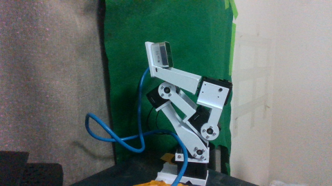
20姿勢を画像確認しながら撮影。元の支持姿勢へ復帰し全5台トルクOFF、22:00頃にユーザーが電源OFFを報告。
相対符号を決めた観測を評価集合から除外しています。絶対角の校正ではありません。肩の実変化は小さく、手首は未検証です。MuJoCo表示モデルの接触は無効のため、全可動域の非干渉を認定していません。
台座・肩・肘の16姿勢相対MAE：1.15° / 0.43° / 0.37°。撮影701.97秒で19.80成功Hz、frame age p95 0.101秒。固定frame処理中央値40.76→29.23ms。性能は最終不在修正前の測定です。

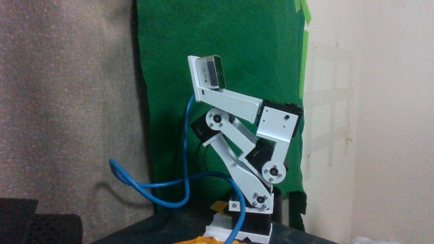
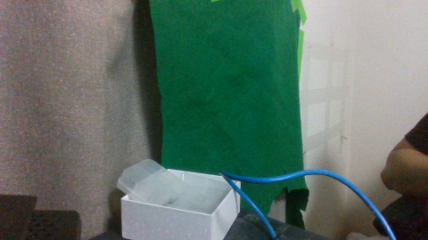
この画像では腕が写っていないのに背景への誤fitが生じました。台座の位置保持と深度判定により修正後はlost。元の誤推定も保存しています。
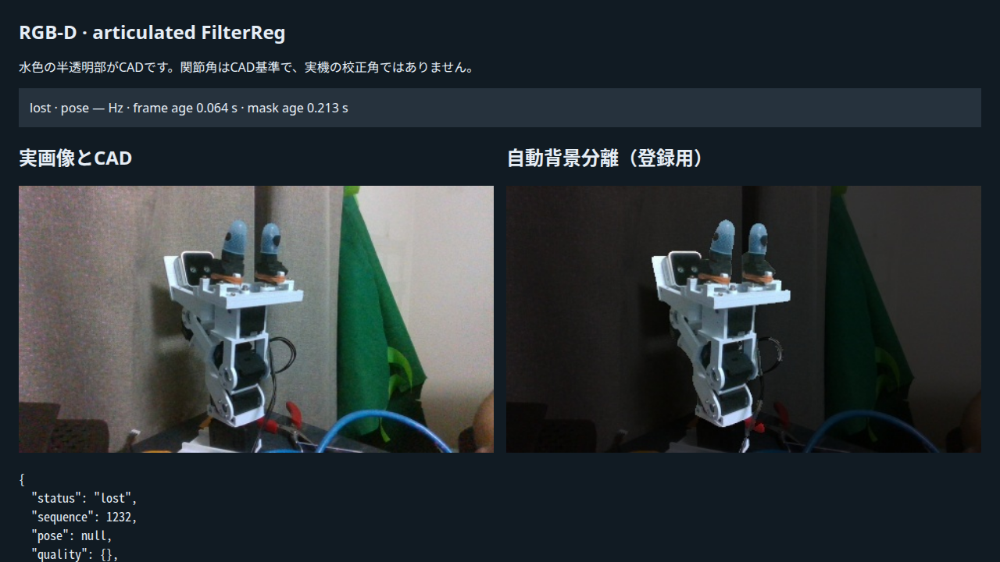
アームは見えていますが古い台座anchorに一致せずlost。再取得が必要です。
{
"captured_poses": 20,
"sign_convention": [
1,
-1,
1
],
"sign_evidence": [
{
"axis": 1,
"first": "pose_06",
"second": "pose_07",
"encoder_delta_deg": -14.0625,
"image_delta_deg": -14.035088192342434,
"sign": 1
},
{
"axis": 2,
"first": "pose_05",
"second": "pose_06",
"encoder_delta_deg": -4.130859375,
"image_delta_deg": 3.3172776701334,
"sign": -1
},
{
"axis": 3,
"first": "neutral",
"second": "pose_01",
"encoder_delta_deg": 8.96484375,
"image_delta_deg": 8.532158686553046,
"sign": 1
}
],
"holdout_poses": 16,
"axes_evaluated": [
"ID1/base",
"ID2/shoulder",
"ID3/elbow"
],
"holdout_mae_deg": [
1.151826034718985,
0.43013809716647877,
0.3714175837360325
],
"holdout_max_abs_error_deg": [
2.969608704970412,
1.405141521635855,
0.8763044332202554
],
"iou_range": [
0.6902451225612807,
0.8980286738351254
],
"median_depth_residual_mm_range": [
2.4904006658714675,
3.5130948933894315
],
"encoder_range_deg": [
58.53515625,
4.39453125,
19.951171875,
1.845703125,
0.0
],
"max_bracket_drift_counts": 1,
"hardware_synchronized": false,
"absolute_calibration_verified": false,
"wrist_verified": false,
"wrist_reason": "Only about 1.8 degree motion; +6 candidate stalled. Image estimate did not resolve that small change.",
"id5_verified": false,
"id5_reason": "No moving downstream jaw geometry installed.",
"collision_status": "No visible contact on reviewed paths; whole-range collision evidence is unavailable. Wrist candidate is rejected."
}指令 [0, 0, 10, 0, 0]
相対角誤差（台座・肩・肘） -0.26, +0.27, -0.43°
IoU 0.723
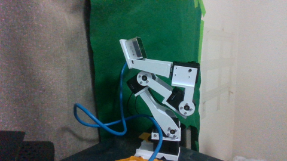
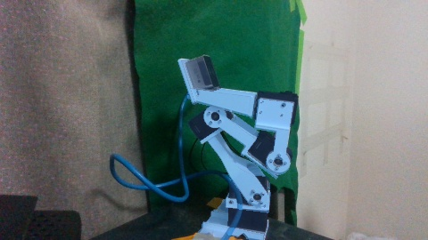
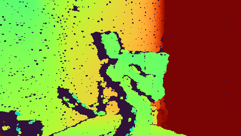
指令 [0, 0, 20, 0, 0]
相対角誤差（台座・肩・肘） -0.33, +0.60, +0.74°
IoU 0.690
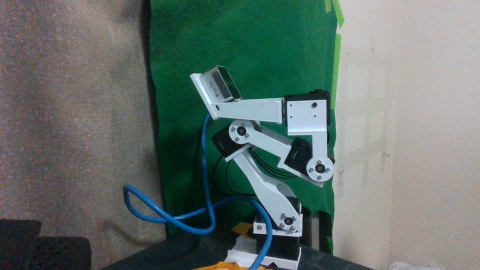
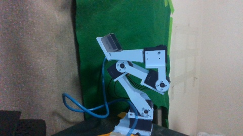
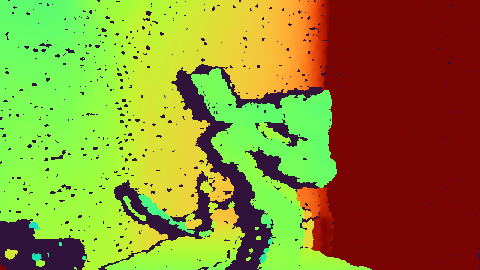
指令 [0, 0, 30, 0, 0]
相対角誤差（台座・肩・肘） +0.79, +0.05, -0.15°
IoU 0.746
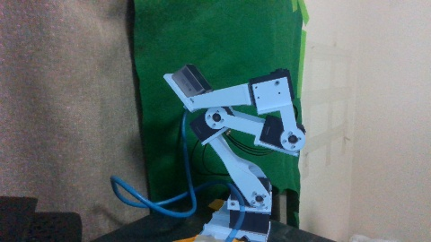
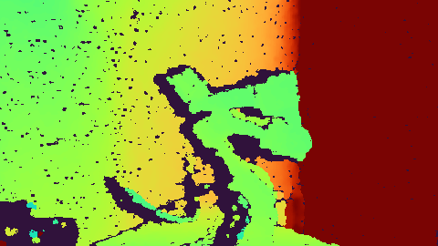
指令 [0, 0, 30, 3, 0]
相対角誤差（台座・肩・肘） +0.72, +0.08, -0.29°
IoU 0.697
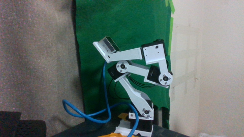
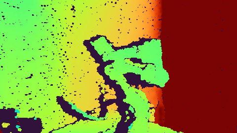
指令 [0, 3, 30, 0, 0]
相対角誤差（台座・肩・肘） +1.10, +0.59, -0.26°
IoU 0.698
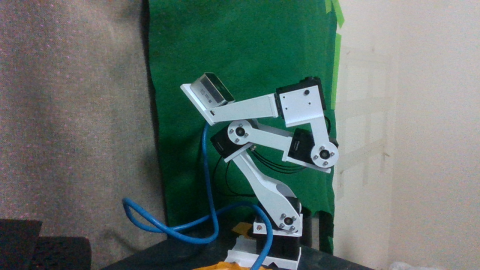
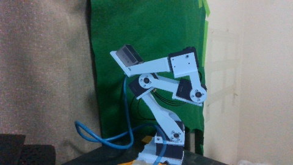
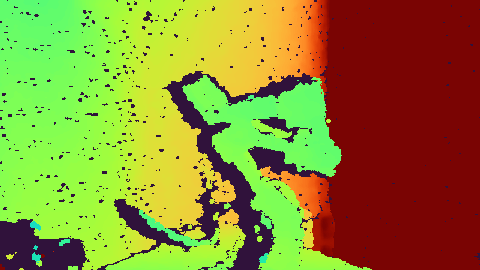
指令 [0, -3, 30, 0, 0]
相対角誤差（台座・肩・肘） +0.19, -0.22, +0.05°
IoU 0.709
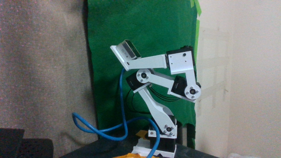
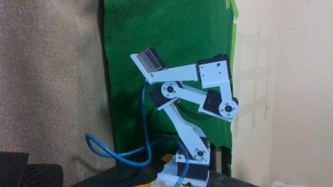
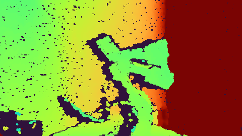
指令 [-15, -3, 30, 0, 0]
相対角誤差（台座・肩・肘） +0.22, -0.79, -0.50°
IoU 0.716
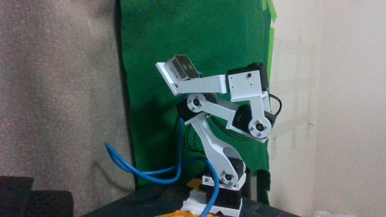
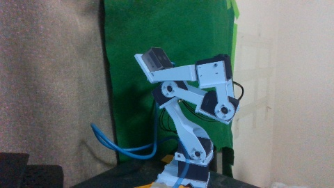
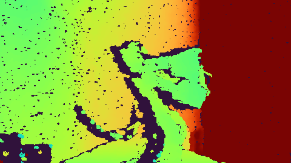
指令 [-30, -3, 30, 0, 0]
相対角誤差（台座・肩・肘） +2.72, +1.41, -0.74°
IoU 0.801
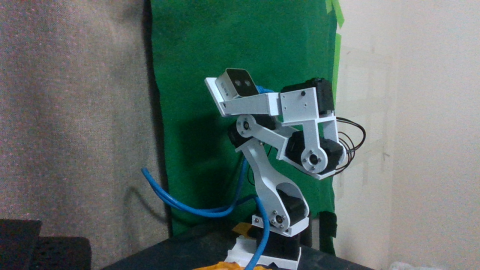
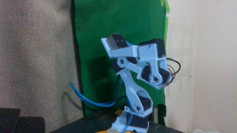
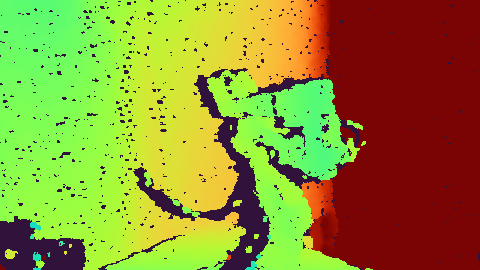
指令 [-30, 3, 30, 0, 0]
相対角誤差（台座・肩・肘） +1.04, +0.72, -0.14°
IoU 0.873
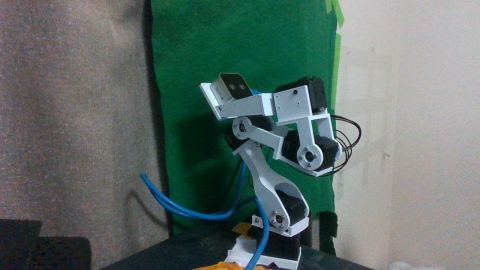
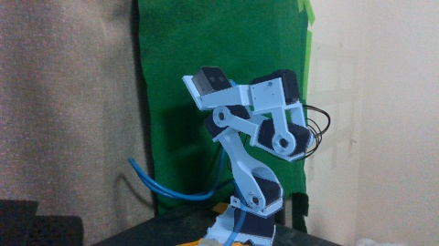
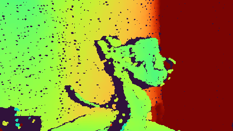
指令 [-15, 3, 30, 0, 0]
相対角誤差（台座・肩・肘） -0.01, +0.14, -0.88°
IoU 0.749
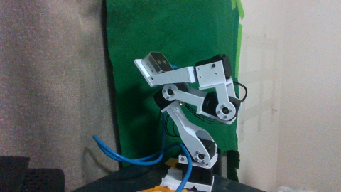
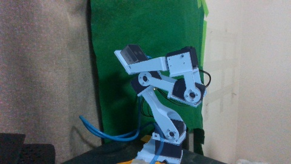
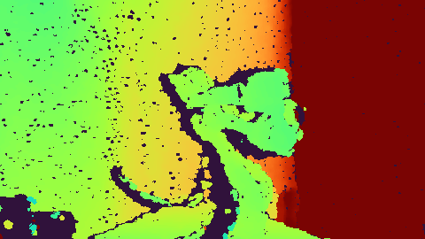
指令 [0, 3, 25, 0, 0]
相対角誤差（台座・肩・肘） +0.54, +0.42, +0.05°
IoU 0.851
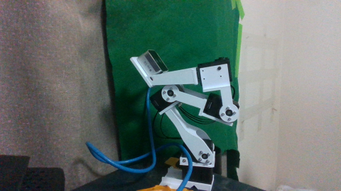
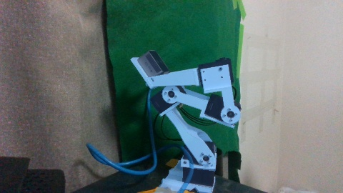
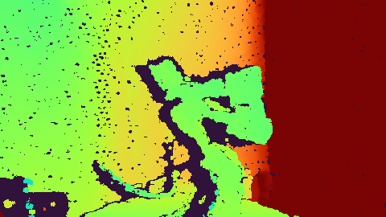
指令 [15, 3, 25, 0, 0]
相対角誤差（台座・肩・肘） +0.66, +0.58, +0.34°
IoU 0.750
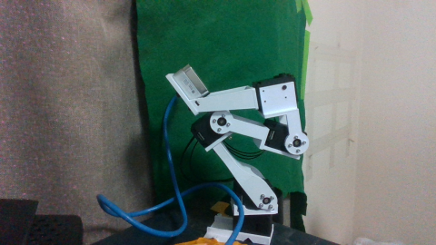
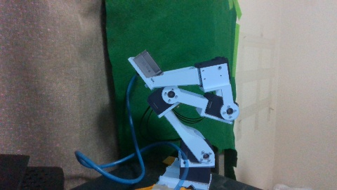
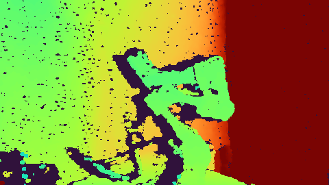
指令 [30, 3, 25, 0, 0]
相対角誤差（台座・肩・肘） +1.82, +0.74, +0.47°
IoU 0.691
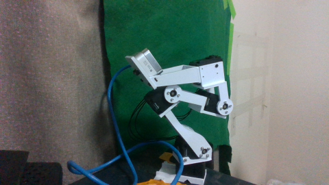
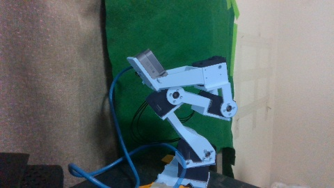
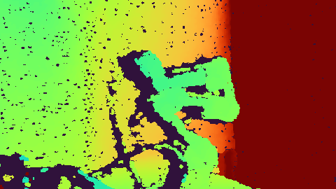
指令 [30, -3, 25, 0, 0]
相対角誤差（台座・肩・肘） +2.54, +0.37, +0.44°
IoU 0.714
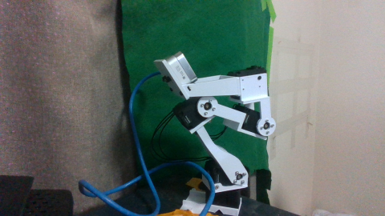
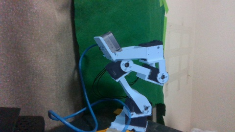
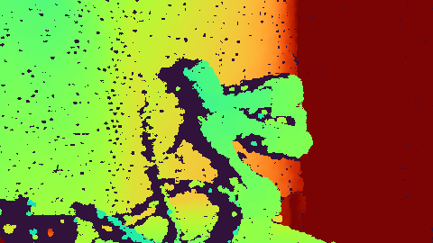
指令 [15, -3, 25, 0, 0]
相対角誤差（台座・肩・肘） +0.86, -0.03, +0.35°
IoU 0.740
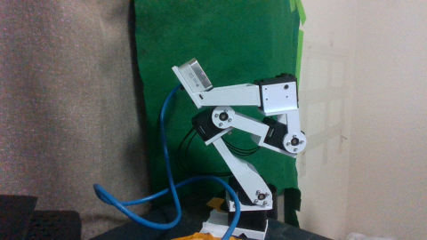
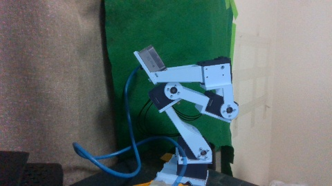
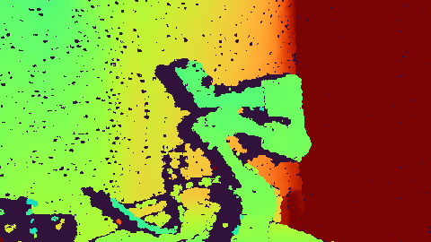
指令 [0, -3, 25, 0, 0]
相対角誤差（台座・肩・肘） +0.56, +0.01, +0.25°
IoU 0.849
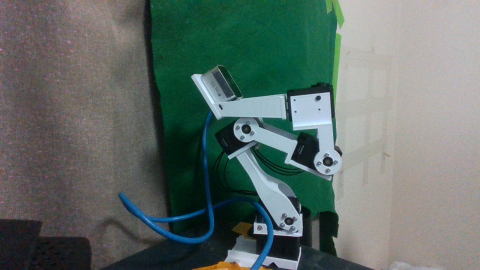
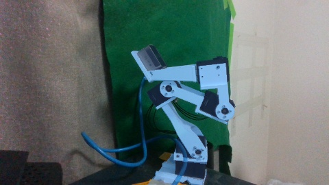
指令 [-15, -3, 20, 0, 0]
相対角誤差（台座・肩・肘） +0.85, -0.84, +0.28°
IoU 0.803
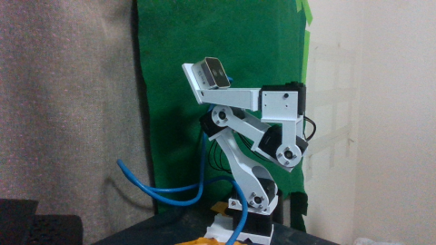
指令 [-30, -3, 20, 0, 0]
相対角誤差（台座・肩・肘） +2.97, +0.19, -0.20°
IoU 0.898
指令 [-30, 3, 20, 0, 0]
相対角誤差（台座・肩・肘） +1.79, +0.09, -0.56°
IoU 0.819
指令 [0, 3, 20, 0, 0]
相対角誤差（台座・肩・肘） +0.22, +0.62, -0.07°
IoU 0.846